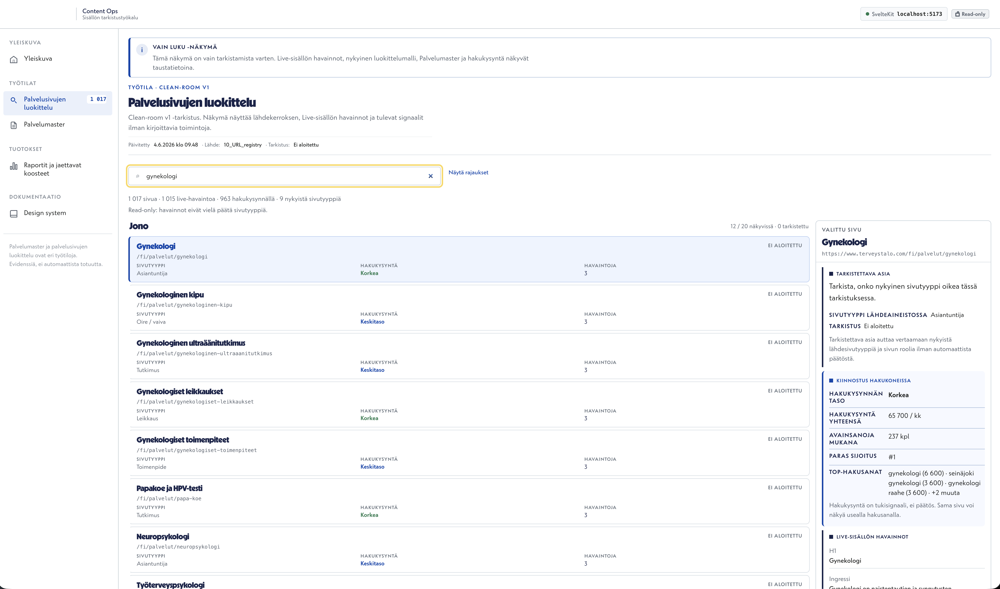

Content Ops Platform
Paikallinen työtila, jossa hakukysyntä, sivuhavainnot ja priorisointi kulkevat yhdessä.
Ongelma
Laaja sivumassa, hakukysyntä ja sivuhavainnot pitää saada samaan tarkistusnäkymään.
Ratkaisu
Työtila kokoaa valitun sivun, havainnot ja priorisoinnin yhteen päätöstä tukevaan näkymään.
Hyöty
Seuraavat kehitystoimet on helpompi valita, perustella ja muuttaa työjonoksi.
